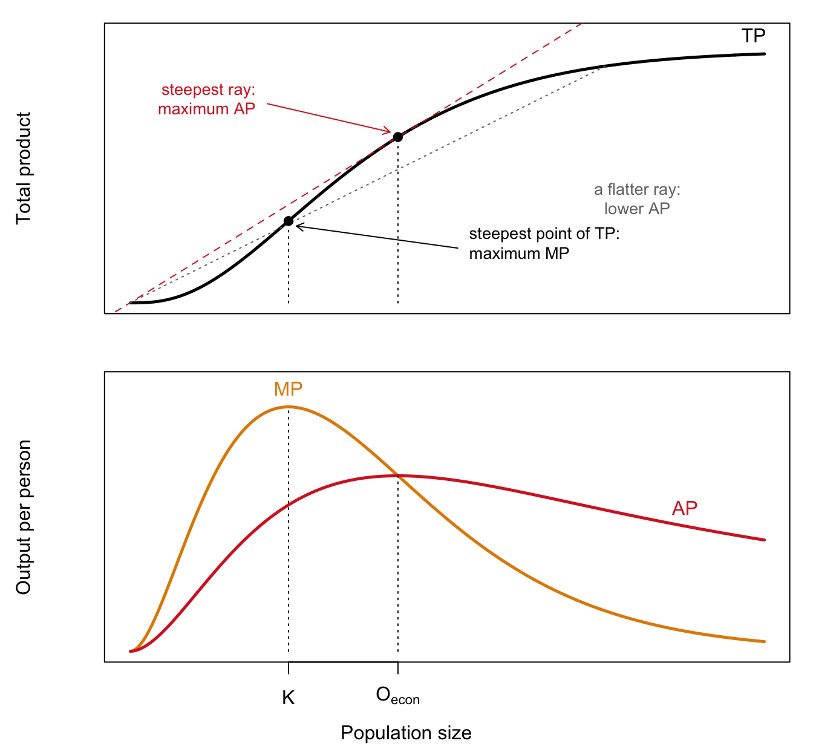
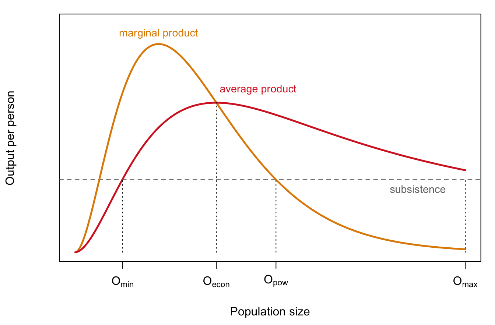

2 The Optimum Population
Draft: provenance notes (for review)
Margin tags mark material that is not in the course slides or lab. Added · from readings comes from the assigned readings (Sauvy, Livi-Bacci). Added · new is from outside the course materials (my framing, general knowledge, or my own analysis) and needs the closest check. Untagged material follows the 2025 slides (01–04) and Lab 1.
Added · new Bridge text written for the chapter split.
Chapter 1 described how human numbers have changed: near-zero growth for millennia, an explosion in the last two centuries, and the slowdown of the demographic transition. This chapter asks a different kind of question: what size of population is optimal, and for whom? The tools it introduces, the total, average, and marginal product, come back in the chapters on Malthus (Chapter 3), Solow (Chapter 4), and migration (Chapter 14).
2.1 Not too big, not too small
“If there is such a thing as over-population and such a thing as under-population, it follows that between the two there must be such a thing as just the right population.” (H. P. Fairchild, quoted by Sauvy)
What size population is best? It is a slippery question, because the answer depends on who is asking (a peasant, a worker, a voter, a king, a president, a capitalist, “society”) and what they want to maximize (average welfare, longevity, cultural power, military power, the sum of everyone’s welfare).
Added · from readings Sauvy’s list of aims, the assumptions held constant, the India example, and Sismondi’s king of England are from Sauvy 1966, pp. 36–40.
The French demographer Alfred Sauvy, whose General Theory of Population is our guide here, insisted that “optimum” is an innocent word, a synonym for “best.” “The most violent opponents can agree on such a premise, even if they disagree on what they hold to be ‘best’.” He listed nine possible aims: individual welfare; the fastest increase of wealth; employment; power; long life and health; culture and knowledge; total welfare; the “sum of life” (population times average lifespan); and sheer numbers, where the optimum is the same as the maximum. Different aims give different optima. So we should really speak of optima, plural.
Sauvy also pointed out a contradiction in phrases like “the population arrived at its greatest strength and comfort.” Strength and comfort are generally maximized at different sizes. The same problem afflicts Jeremy Bentham’s “greatest amount of good for the greatest number.” There is usually a trade-off.
To isolate the effect of numbers alone, Sauvy held everything else constant: natural resources and past investment, technology, the age structure and the productivity of individuals, the distribution of income, working hours, and trade and migration. This is an abstraction, he admitted, since in practice “numbers rarely vary without changing (or being changed by) some other factor.” But it lets us think clearly.
Two more warnings from Sauvy. First, an optimum is a pointer, not a target. In his example, to say that India’s 500 million people “would be more at ease if there were only 300 million” is not to say “that 200 million should be shot.” Second, choosing an aim is an ethical matter, not a scientific one. Sauvy recounts the economist Sismondi’s challenge. Suppose technology allowed the king of England to live alone on his island, with machines doing all the work, at an extremely high standard of living. Would that be an optimum? Most people find the idea distasteful. Still, Sauvy observed, in Western societies the aim of individual welfare had come to dominate. So he concentrated on two optima: the economic optimum and the power optimum.
2.2 Total, average, and marginal product
We need three concepts that will reappear throughout the course.
- The total product, \(TP(N)\), is the output of a population of \(N\) people.
- The average product, \(AP(N) = TP(N)/N\), is output per person. With equal sharing, it is the standard of living.
- The marginal product, \(MP(N)\), is the additional output from adding the \(N\)th person. Total product is the sum of the marginal products of everyone so far: \(TP(N) = MP(1) + MP(2) + \dots + MP(N)\).
Figure 2.1 shows how the three fit together, following Sauvy’s own diagrams.
Three facts to read off the figure:
- Marginal product is the slope of total product. Where TP rises steeply, each extra person adds a lot. Where it flattens, they add little. The marginal product peaks at K, where total output grows fastest.
- Average product is the slope of a ray from the origin. The ray to any point on the TP curve rises \(TP(N)\) over a run of \(N\), so its slope is \(TP(N)/N\).
- At the economic optimum, the two slopes are equal. The steepest possible ray just touches the TP curve, so there the ray’s slope (AP) equals the curve’s slope (MP). In the bottom panel, this is where the MP curve crosses the AP curve at the top of the AP curve.
2.3 The economic optimum
Sauvy’s economic optimum is the population that maximizes the average standard of living, \(AP\). It takes an individual perspective. Size benefits not “society” but each person through their standard of living, and inequality is not part of the objective.
Why is there an optimum at all? Sauvy’s illustration: imagine England with only 50 to 100 people. Even with advanced technology, they could not run railways or steel foundries, and would live as craftsmen or shepherds. Now imagine 200 to 500 million people on the same island, cultivating even the poorest soils by hand. In both cases the standard of living would be very low. Somewhere in between lies the best size. (A smaller example from lecture: what is the optimum size for a freshman English seminar?)
2.3.1 Why a population can be too small: increasing returns
The lecture lists three reasons a population can be too small:
- No specialization. Adam Smith’s pin factory: dividing tasks among workers multiplies their output.
- No complementarity. Some tasks need more than one person, like holding a ladder while someone changes a light bulb.
- Fixed costs. Roads, machines, and teachers are only worthwhile if enough people share them.
Added · from readings The examples in the next three paragraphs are from Sauvy 1966, pp. 45–46 and 48–49, and Livi-Bacci 2017, pp. 1 and 21.
Sauvy fills these out with examples. Specialization, he stresses, is not a matter of new technology. It lets a population use tools it already knows about but couldn’t use without enough people to specialize. “For ten readers one uses a typewriter, for one thousand a printing press.” Even without machines, much work gets cheaper per unit as it is shared: “it does not, for instance, take ten times as long to wash ten plates as to wash one.” Increasing returns of this kind, he notes, show up mostly in activities that transform uniform materials, such as manufacturing.
His second source of increasing returns is communal expenses, or “overheads.” Some costs barely depend on the number of people who share them: the upkeep of a bridge that isn’t crowded, the ruler’s house, a radio programme. The more people there are, the smaller each person’s share. Sauvy is careful to give the objection. Sooner or later one more user will make the bridge too crowded and it will have to be widened, so these costs are only fixed up to a point. But, he concludes, “the fact remains that returns are increased by a rise in the number of men.”
Size matters for settlement too. Sauvy observes that the first Europeans in America “would have been ill-advised to spread out too much.” They needed each other, and trade required people concentrated at a few coastal points. Livi-Bacci adds two more reasons from the deep past. A very small group cannot survive at all: groups must be large enough “to ensure a reasonable choice of partners and to survive catastrophic events.” And only a large population can mobilize the labor to build houses, cities, roads, bridges, ports, and canals. That is why, for most of history, a densely settled landscape was read as a sign of prosperity, and deserted land as a sign of decline.
2.3.2 Why a population can be too big: diminishing returns
The lecture’s reasons a population can be too big:
- Diminishing marginal returns. Adding workers to a fixed amount of land adds less and less output.
- Variable quality of inputs. The best land is farmed first, so later acres are less productive.
- The neoclassical version. Each additional unit of capital, even if identical, adds less to productivity than the one before.
Added · from readings Sauvy 1966, pp. 44–46.
Sauvy’s examples come from natural resources. “The reserves in mines vary; game does not increase proportionally to the number of hunters; fishing grounds have to be moved.” The same holds for hydroelectric dams, forests, and tidal energy. In each case the resource is limited, and more people means less for each.
Sauvy also answers a common objection: isn’t every activity subject to increasing and then decreasing returns? A factory, after all, first becomes more productive as workers are added, and then less so once they get in each other’s way. His answer turns on whether the fixed input can be copied. When a factory is full, you can build a second or third one at about the same cost. But “a mine, a farm, a fishing ground may have decreasing returns because it is difficult to build or find a second similar to the first.” Manufacturing can be replicated, but land and natural resources cannot. That is why diminishing returns bite hardest in agriculture, and why they are central to Malthus, the subject of the next chapter.
2.3.3 Finding the optimum
The relationship between the curves is the key to finding the optimum. When the marginal product is above the average, adding a person pulls the average up. When it is below, adding a person pulls the average down. So the average product is at its maximum exactly where the marginal product crosses it. Sauvy put it as “when the marginal output equals the average output, the latter is not changing.”
2.4 The power optimum
Added · from readings Cathedrals and interplanetary travel are from Sauvy 1966, p. 59. The variable subsistence level (below) is from pp. 55–56.
Now take the point of view of the ruler, or of society as a whole (“La France”). Sauvy defines power as total production beyond what is needed for subsistence. It is the surplus available for pyramids, armies, cathedrals, or space programs. Power need not be military. Sauvy’s examples include national prestige and culture. “In building cathedrals collectively,” he writes, “the Middle Ages were seeking the power optimum rather than the economic optimum. The same applies to interplanetary travel.” Each person adds their marginal product to output but must be fed, so
\[ \text{power}(N) = TP(N) - N \times \text{subsistence} = \sum_{i=1}^{N} \left[ MP(i) - \text{subsistence} \right]. \]
Do more people always mean more power? No. A person whose marginal product exceeds subsistence adds to the surplus. A person whose marginal product falls short of subsistence is a net cost, and must be fed from others’ output. So power is maximized at the population where the marginal product equals subsistence.
What counts as “subsistence”? Sauvy first treats it as fixed, the bare minimum to keep people alive and working. Then he loosens the assumption. People produce more when better fed, and they get used to a way of life. He reports that commanders claimed soldiers or workers deprived of tobacco would produce less. So the subsistence level that maximizes power depends on the country and the times. In wartime, Sauvy notes, it was higher in the United States than in Germany, and higher in Germany than in the Soviet Union.
2.5 Ordering the optima
Figure 2.2 puts these together with two more reference points: the minimum population (the smallest that can feed itself, where the average product first reaches subsistence) and the maximum population (the largest that can feed itself, where the average product falls back to subsistence).

Sauvy shows that, in general,
\[ O_{\min} < O_{\text{econ}} < O_{\text{pow}} < O_{\max}. \]
The power optimum is larger than the economic optimum, because past the economic optimum each extra person still produces more than they need to subsist, adding to the ruler’s surplus while lowering everyone’s average. The power optimum is smaller than the maximum, because between the two each extra person produces less than subsistence and must be fed by others.
How can people survive when their marginal product is below subsistence? Because output is shared. As long as the average product is above subsistence, the group as a whole can feed everyone.
2.6 A worked example
Here is the example from lecture. Suppose the marginal products of the first six people are 0, 4, 3, 2, 1, 0, and subsistence is 2 units per person.
| Population (N) | 1 | 2 | 3.00 | 4.00 | 5 | 6.00 |
| Marginal product | 0 | 4 | 3.00 | 2.00 | 1 | 0.00 |
| Total product | 0 | 4 | 7.00 | 9.00 | 10 | 10.00 |
| Average product | 0 | 2 | 2.33 | 2.25 | 2 | 1.67 |
| Power = TP − 2N | -2 | 0 | 1.00 | 1.00 | 0 | -2.00 |
The average product is highest at \(N = 3\) (2.33), so that is the economic optimum. Power is highest at \(N = 3\) or \(N = 4\) (both give 1). The fourth person’s marginal product, 2, exactly equals subsistence, so adding them leaves power unchanged. The largest population whose average product still covers subsistence is \(N = 5\), the maximum.
2.7 Try it: the Sauvy app
Added · new The app is the course’s own Sauvy app (ShinyApps/sauvy in the 2025 course repo), exported with Shinylive so it runs in the browser, in its own tab. The three questions are mine; they change only the marginal products of individual workers, to stay clear of the in-class questions printed on the app itself (slide 04-05) and of the Lab 1 graded questions on the definitions of the optima.
The app draws the marginal product (orange), average product (red), and subsistence level (black) for a population of up to 1,000 people, and marks the four reference points: minimum population, economic optimum, power optimum, and maximum population. The five “MP” sliders set the marginal product at five points along the way (numbered 1 to 5 on the graph); the app connects them with straight lines. It opens in a new tab, so you can make it full screen and keep this page open alongside it. (The first load can take a few seconds while R starts up in your browser.)
Open the Sauvy app in a new tab ↗
Before you move each slider, write down what you expect to happen. Then check.
- More productive middle workers. Raise “MP 3” from 19 to 29. Which way will the economic optimum move? What happens to the highest standard of living the population can reach?
- A sharper peak. Return MP 3 to 19, and raise “MP 2” from 29 to 45. Productivity is now higher than before. Does the economic optimum move toward a larger or a smaller population? (Remember where the average product reaches its maximum.)
- More productive late workers. Return MP 2 to 29, and raise “MP 4” from 10 to 20. Which of the four reference points move, and which stay put? Why does the economic optimum care about some workers’ productivity but not others’?
In class we use the app to check the ordering of the optima; Lab 1 asks you to compute the optima by hand for a small island.
2.8 Extensions from Sauvy
Added · from readings Overheads and military power are from Sauvy 1966, pp. 47–48 and 53–55 (the military discussion is just past the assigned pages).
Overheads raise the optimum. Suppose a population suddenly has to pay a fixed cost, such as tribute to a foreign power or a long-postponed public work. Total output available for consumption falls by a fixed amount at every population size. Because the burden can be shared, more people now help. In Sauvy’s words: “The greater the load men have to bear, the greater their advantage is in being numerous to bear it; so that when a country gets into debt with the outside world, its wealth decreases but its optimum population rises.”
Military power raises the power optimum further. Soldiers produce nothing but must be fed. A state that wants an army as well as weapons needs a population even larger than the power optimum, to feed the soldiers out of the surplus.
Added · from readings Quotes in the next three paragraphs are from Sauvy 1966, pp. 62–63, which are past the assigned pages. The “French intellectual tradition” framing follows lecture.
Rulers and the economic optimum. Why did it take so long for anyone to ask which population makes the average person best off? Sauvy’s answer is that the people whose views counted generally preferred the power optimum. “As a general rule,” he writes, “whoever holds or seeks power wishes to increase numbers.” The patriarch welcomes every birth in his tribe, because his power “is almost identical with his wealth.” The absolute monarch wants more subjects, and his wealth too “coincides with his power because it is separate from the rest of the population.” Under a dominant class with absolute power, “the more slaves, labourers, or workers, the more stable its power.” Then comes the passage quoted in lecture:
“Before the nineteenth century this desire for power used to be so predominant that it hampered for a long time the understanding of the economic optimum. At about the time when this was understood, regal authority began to decline.” (p. 62)
Notice the order in that second sentence: first an idea is understood, and then authority declines. This fits a long French intellectual tradition that treats ideas as real forces in history, so that how people understand their situation shapes what they do next. Once people could see that a larger population might serve the king’s power at the expense of their own standard of living, the case for royal authority weakened.
But Sauvy’s own examples show that the causation can run the other way too. The same contrast between power and welfare appears inside the family. “As long as children remained under the narrow and direct authority of the father, power was by far the main objective. With the emancipation of children the birth rate has decreased because economic considerations have taken the upper hand.” Here a change in conditions, the father’s weakening authority, comes first, and the economic way of thinking follows. Sauvy finds the same pattern in organizations. Senior civil servants want bigger staffs, because staff is power. A private firm, or an efficiency-minded public agency, wants as few people as possible on each task. Which optimum you favour depends on where you stand.
So did the idea of the economic optimum bring down kings, or did the decline of kings make the idea thinkable? Most likely both. New ideas made the old order look less legitimate, and a changing world made the new ideas more persuasive. It is hard to say which was cause and which was effect. Keep that question in mind throughout the course: when behaviour and ideas about behaviour change together, which one is driving?
2.9 Population “evolution”
If technology and everything else stayed constant (a big “if”), a growing population would pass through these stages in order:
- the minimum (viable) population;
- maximum marginal productivity, where total output grows fastest;
- the maximum standard of living, the economic optimum;
- maximum power, the power optimum;
- the maximum (viable) population.
2.10 Critiques, and why the framework is still useful
Added · from readings The camel-shaped curve and Gini are from Sauvy 1966, p. 42. Gini’s first name is from general knowledge.
The optimum population has obvious limits:
- It assumes fixed technology. Perhaps each population density has its own appropriate technology. We’ll read Ester Boserup on this (Chapter 5).
- The optimum may not be a single point. The objective could have many peaks, or a wide, flat top, so that a broad range of sizes is about equally good. Sauvy himself mentions a “camel-shaped curve with two humps.” The Italian statistician Corrado Gini argued for two optima, one at the agricultural stage of development and one at the industrial stage. That example also shows how closely this critique is tied to the first one, about technology.
- It ignores feedback between population size and technological level.
And the optimum is a theoretical idea, not a requirement. It doesn’t mean we should get rid of people if we are above it.
Still, the framework is very useful. It shows how the optima are ordered in general, and it shows that the “best” population depends on the objective, which means on whose perspective we take. The tools will also come back. The total product picture will be useful for the Solow growth model, and the marginal product picture for Malthus (next chapter) and for migration.
2.11 Key ideas
- Sauvy’s optima depend on the objective, and so on whose perspective we take.
- The economic optimum maximizes the average product, and the power optimum maximizes the surplus over subsistence.
- In general, \(O_{\min} < O_{\text{econ}} < O_{\text{pow}} < O_{\max}\).
2.12 Check your understanding
Added · new Q1 comes from your slide 03-22. The rest are new and avoid the Lab 1 graded questions.
Does the ordering always hold? Suppose the marginal product falls from the very first person. What is the economic optimum? Is the power optimum still larger than the economic optimum?
A higher subsistence requirement. In Figure 2.2, what happens to each of the four reference points if subsistence rises? Which of them doesn’t move?
Soldiers. Sauvy argues that a state wanting military power needs a population even larger than the power optimum. Explain why in one or two sentences, using the idea of the surplus over subsistence.
2.13 Further reading
- Sauvy, Alfred. 1966. General Theory of Population. Basic Books. Pages 36–41 for an overview, 42–48 on the economic optimum, and 51–52 on the power optimum.